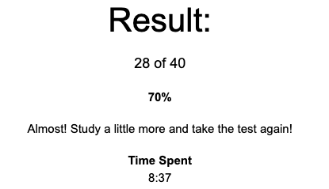

This is a summary of what I've learned in my classes.
We have been introduced to Git/GitHub. We have been shown a quick demo on the advantages of using VS Code. We installed an extension onto VS Code. We have done an introductory demo of how to committ changes in files to a repo that we cloned onto our machines. I am still getting my head around how GitHub browser, GitHub desktop and VS Code work together.
I feel like I am getting the hang of how GitHub browser, GitHub desktop and VS Code work together. I worked out that my site wasn't showing in the browser as I didn't have 'main' selected for the root.
I feel that I understand HTML and will work on putting the use of different elements into play.
I've taken the HTML quiz and did not do very well. I will study some more and then take it again. Here are my results:
We have been shown how to set the 'color' for multiple elements. We have been shown have to use a 'div' to set seperated sections of a page simply for visual purposes.
I am still working on trying to understand Flex and Flex Box as well as other layout options such as floats (and clears).
I have been studying and coming back to the Google page task but I have not cracked it yet!
I'd like to use the below 'color' scheme for this CPD page, but need to understand how to style things in a better way before I can introduce more 'color'

We have created: function, if, return, else, else if and switch. The 3.3.3 task was for creating a calculator with multiple operator options went well and here are my console.log results: